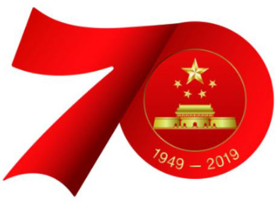
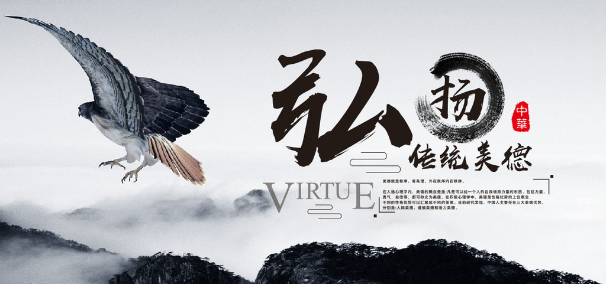

传统美德
学校：中南大学网络教育学院
姓名：张战伟
学号：16111519039003

The Great Traditional Spirits Of Chinese
形成和发展
中华民族传统美德是怎样形成和发展的呢？“仁、义、礼、智、信”是中国古代儒家提出并归纳的五个最重要的道德要求，从文字记载看，距今已有2500多年历史，从口头传播来看，还要早得多。在漫长的历史进程中，随着社会演变和文明的推进，逐渐得到明确、规范、升华、丰富和发展。
首先，春秋初期著名的政治家、思想家管仲提出了“礼、义、廉、耻”四个道德要素。管子对这四个要素非常看重，称“四维张则君令行”，“四维不张，国乃灭亡”，意思是说，这四大道德要素如果能够弘扬，君主的政令就能够畅通，反之国家就要灭亡，从关系国家生死存亡的高度强调了这四大道德要素之重要。何谓“四维”？管子说“一曰礼，二曰义，三曰廉，四曰耻”，“礼义廉耻，国之四维”。
春秋末的老子提出人要“上善若水”。意思是最善的人要像水一样，具体地说，要“居，善地；心，善渊；与，善仁；言，善信；政，善治；事，善能；动，善时；夫唯不争，故无尤”。显然老子倡导“仁”、“信”等道德操守。随后，战国思想家孟子在此基础上把“仁、义、礼、智”这四个要素整理归纳出来，作为道德的基本要求。《孟子·告子》篇写道“恻隐之心，仁也；羞恶之心，义也；恭敬之心，礼也；是非之心，智也。仁义礼智，非由外铄我也，我固有之也，弗思耳矣。”孟子的意思是说，“仁、义、礼、智”这四个方面是我自身独有的，并不是外界给我的，人就应该有这样的本质和品德。孟子把“恻隐之心、羞恶之心、恭敬之心、是非之心”总结归纳为“仁、义、礼、智”，并把它们作为基本的道德规范、道德准则和道德理念。
把“仁、义、礼、智、信”五大道德要素整合在一起加以全面阐述和规范的，是汉代的董仲舒。他说“仁谊礼智信，五常之道”，要在世间推行，以此教育民众，改变民间陋习，形成良好的民风。文中的“谊”即“义”。《汉书·董仲舒传》写道“夫仁谊礼智信，五常之道，王者所当修饬也。王者修饬，故受天之晁，而享鬼神之灵，德施于方外，延及群生也。”这是中国历史上第一次明确提出“仁义礼智信”这个“五常之道”，即五大道德要素。官方把“仁义礼智信”明确为整个国家要提倡和遵循的道德纲领，是在汉建初四年（公元79年）的白虎观会议以后。当时西汉政权召集大夫、博士、议郎、郎官和诸生集会白虎观，讨论五经同异，会后汉章帝命班固把讨论结果编成《白虎通义》作为官方典籍公布，影响深远。《白虎通义》中写道“五常者何？仁、义、礼、智、信也。仁者不忍也，施生爱人也；义者宜也，断决得中也；礼者履也，履道成文也；智者知也，独见前闻，不惑于事，见微者也；信者诚也，专一不移也。故人生而应八卦之体，得五气以为常，仁义礼智信也。”不仅将“五常”正式确定下来，而且进行了明确具体的内容界定，这是历史上官方文书关于“仁、义、礼、智、信”的最早记载。
随着历史的发展，特别是到魏晋之后，官方、民间出现了道德认识的不同观点、不同主张，对“仁、义、礼、智、信”也进行了多种阐述，进行了新的创造和新的规范。尽管如此，“仁、义、礼、智、信”作为传统道德之主要架构并没有发生根本改变。其间，特别是作为宋明理学的“顶梁”人物程颢、程颐、朱熹等思想家在这方面的贡献最为突出。二程将“仁、义、礼、智、信”发展为“五常全体四支”说，即“仁义礼智信五者，性也。仁者，全体；四者，四支。”意思是说，如果把“仁”看作是整个身体，“义礼智信”则是身体的四肢。朱熹则提出“仁包四德”的著名论断。